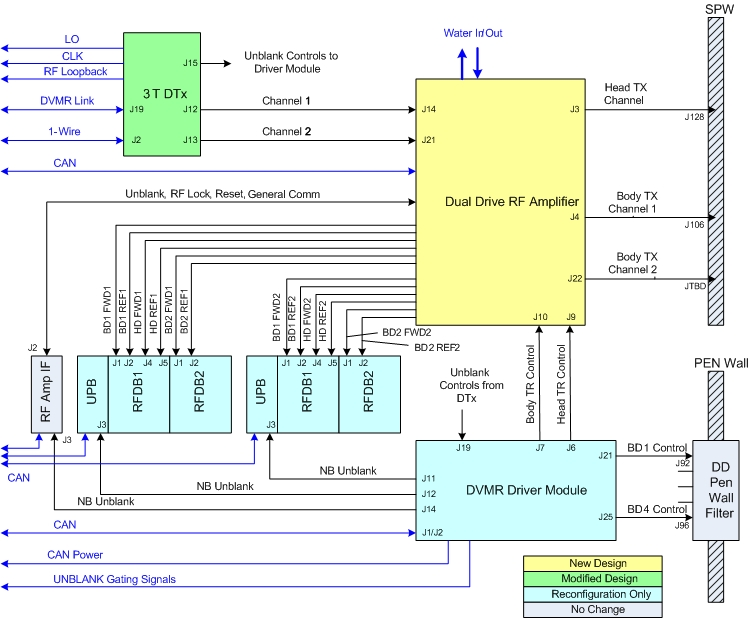
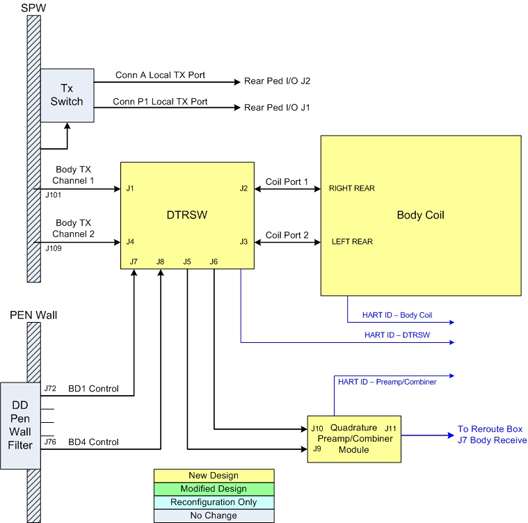

Operating Documentation
Direction 5670006, Rev# 1
Discovery MR750w GEM Service Methods
Module Version 3.0, Version Date 10/18/11
Operating Documentation |
The purpose of the dual drive feature is to improve image homogeneity.
Dual drive technology reduces shading caused by dielectric affect when scanning areas of the body that are more elliptical or irregular in shape (rather than circular), such as the thigh, pelvis, abdomen, and breast. The dual drive controls the amplitude and phase relationships between the two separate drive points on the system body coil and minimizes the dielectric effect. The MR750w establishes an elliptical polarized RF field primarily in a horizontal direction.
Dual drive applies only to body transmit. Two identical body transmit paths are maintained from the Exciter output to the body coil input. Dual drive only affects body mode imaging and receive-only surface coil (single channel and phased array) imaging.
The MR750w drives the body coil in either Quadrature mode or Elliptical mode.
The two Elliptical modes are selectable in the GUI:
Preset mode: A fixed set of values for attenuation and phase; the default mode for the end user in most scans. The fixed values are 3dB of magnitude and -30 degrees of phase.
Optimized mode: The operator sets the values of attenuation and phase on a per-patient and per-anatomy basis. The process of using Optimized mode is complicated and time consuming. The majority of operators will not use this option.
Most system tools and service protocols are run only in Quadrature mode. One exception is Uniformity, which lets the user choose Quadrature or Preset in the GUI.
Anatomies with circular shapes, such as head, knees, and wrists, are not improved through the use of dual drive technology. Therefore, dual drive is not applicable to any local TR coils (TR Split Head, TR Knee, TR Wrist, etc).
The dual drive feature includes new and modified hardware, new and modified software, and modified system tools.
The block diagrams show configurations for the equipment room and the scan room.
The following illustration shows the configuration of a dual drive equipment room.
Illustration 1: Dual Drive Equipment Room Block Diagram

The following illustration shows the configuration of a dual drive scan room.
Illustration 2: Dual Drive Scan Room Block Diagram

The dual drive system changes most hardware components in the transmit chain. However, only the body receive Quadrature Preamp/Combiner Module in the receive chain is affected.
MR750w has no remotely-located Dummy Load (in the hybrid or magnet room) to absorb reflected power. Instead, all reflected power from the RF body coil is absorbed by use of internal circulators and dummy loads inside the RF amplifier. Therefore, during normal operation, it is not unusual for large values of reflected power in excess of 4:1 VSWR to be present on the Channel 1 and Channel 2 body RF transmission lines. The MR750w DTX1 Exciter drives the Channel 1 and Channel 2 RF amplifier gain stages with two RF outputs, each of which can be independently set with respect to amplitude and phase. However, both outputs use the same exciter unblank control signal.
In Dual Drive, the naming convention of CH1 for Channel 1 and CH2 for Channel 2 is used. CH2 exits the exciter at J13 and leads with respect to CH1 (at J12). CH2 is the adjustable channel for elliptical mode. The Dual Drive RF amplifier has two independent RF inputs and uses one unblank signal to control dual body output ports. Each body output port is capable of 15 kW pep @ 1 kW average.
During body transmit, the RF amplifier receives two inputs from the exciter (J14 and J21), and there are two outputs on J4 and J22. During head transmit, the RF amplifier receives one input from the exciter (J14), and there is one output on J3.
The driver module provides a single body TR bias signal to the dual drive RF amplifier, as in previous systems. The amplifier couples this single bias signal onto the two body transmit output ports. Therefore, both body channel transmit cables carry both RF and common body TR DC signal (as in previous systems). What is different is that an open or short-circuit failure on either CH1 or CH2 transmission line can cause a body TR bias fault. Locating source of fault involves suing TR DD System Path Check diagnostic and comparing reported body TR bias current values while disconnecting CH1 and CH2 transmission lines one at a tiime.
The Dual Drive RF Amplifier transmits on two separate body channels (J4 and J22) or a head channel (J3). Each channel must be calibrated separately. Both body channels are calibrated for 15 kW at 127.72 MHz.
The amplifier has two adjustment potentiometers. One is used for Body Channel 1 and the Head; the other is used for Body Channel 2.
The Driver Module is the same part for both MR750 and MR750w. However, only BD1 Control and BD4 Control are used as dyanamic disable outputs.
The system uses a dynamic disable biasing scheme similar to that used for 3T HDx where reverse bias voltage (150V), which detunes the body coil, is the output during head mode and surface coil receive mode and forward bias voltage (-13V), which syncs current through the body coil tuning circuits and tunes the body coil, is applied during the body mode.
The new open circuit limit for the Body TR Control is such that values less than 3200 mA indicate an open circuit fault for dual drive versus 2400 mA for an HDx single drive. Since both CH1 and CH2 are identical transmission line circuits and the body TR bias is being supplied in parallel fashion between both circuits, one should expect to see the same amount of bias drawn on each circuit when the other circuit is physically disconnected. When an open circuit fault is reported, then the fault is located on the channel circuit reporting the least amount of current during TR DD System Path Check diagnostic when the other channel is disconnected. Likewise, when a short circuit reporting the most amount of current during the TR DD System Path Check diagnostic when the other channel is disconnected.
The Dual Transmit Switch (DTRSW) contains the Body TR circuitry needed to properly route the transmit and receive signals and to protect the body preamps and combiner assembly from signal overload. It does not contain quadrature phase shifting circuitry as this function is now performed by the DTX1 Exciter. It also does not utilize direct drive bias as does the MR750 body hybrid splitter. The routing of dynamic disable bias is different from how this is done in MR750. MR750w dynamic disable bias is routed directly onto the body RF coil Channel 1 and Channel 2 RF drive transmission lines through the DTRSW.
For the dual drive feature, the DTRSW replaces the body hybrid. The DTRSW is mounted on the right side of the magnet near the back, opposite from where the body hybrid was. The Preamp Combiner assembly is mounted on it.
The Head Transmit circuit routing is identical to that used in MR750 and the same components are used. The Head Transmit circuit is a single drive and does not use dual drive or a DTRSW.
The Body Coil is a high-pass design as compared to a band-pass. The dynamic disable diodes are in series with the RF input cables.
Applying dynamic disable bias in forward state (13V) so that diodes are conducting tunes body coil so that system is in body mode.
Applying dynamic disable bias to reverse state (150V) so that diodes are not conducting detunes body coil so that system is in head mode or surface coil receive state.
Be aware that removing dynamic disable bias from the body coil effectively puts it into a detuned condition, which makes it a poor receive antenna. This is different from MR750 as removing dynamic disable bias in that product puts the body coil into tuned state and makes it a good receive antenna.
The MR750w exciter is the same basic exciter, but with two independent RF output channels. It also has a new part number.
Both channels are calibrated with each TPS reset. Each channel’s output is calibrated for amplitude and phase utilizing the system receive loopback functionality. Three log files are generated in /usr/g/service/log: dtx1_cal_I_date-stamp, dtx1_cal_Q_date-stamp, and dtx1_iqPhase_date-stamp.
The 3T quadrature preamp combiner is the first gain/processing block in the body coil receive chain (RxC). The preamp combiner accepts two inputs: the I and Q channels from the body coil. The preamp combiner has a single output that connects to the RF Hub. The function of the preamp combiner is similar to the existing legacy preamp combiner.
The high level function of the preamp combiner can be divided into two sections: the preamplifier and the IQ combiner. The preamplifier will provide a nominal gain of 28 dB with a low level of injected noise. The IQ combiner will combine the two amplified body coil channels (I and Q) in quadrature to produce one composite output. See the functional block diagram.
Illustration 3: Preamp Combiner Functional Block Diagram

MRConfig.cfg in /w/config has a new amp type for Dual Drive as well as three additional parameters to enable Dual Drive: RFampType, dualDriveCapable, and ellipticDriveEnable.
A new parameter called RF Drive Mode has been added to the scan prescription page. Quadrature or Preset can be selected on almost any scan sequence without any preliminary work. Preset is usually the default value.
The following service tools are effected by Dual Drive:
RF/UPM Calibration (modified tool)
RF Amp Power Check Tool (modified tool)
RFA (modified tool)
Uniformity tool (modified tool)
Dual Drive Quadrature Calibration (new calibration tool)
UPM Tool UI includes setup for RF Amp calibration.
Apbcal PSD ignores any values in the QuadratureTransmit.dat file, so no attenuation or phase is added during calibration.
With Dual Drive, the system has two body channels and one head channel. the additional body channel, along with the other two channels, needs calibrating and requires a functional check.
For more information, see Body and Head Maximum Power Setup and Calibration
The RF Amp Power Check Tool is used to understand the health of the RF amplifier and the rest of the transmit chain. It includes data for the additional body channel. Test the RF amplifier independently from the transmit chain hardware by connecting the body transmit channel (the one that you are testing) directly to an air-cooled RF dummy load. For more information, see RF Amp Power Check Tool.
RFA includes the additional channel at Exciter and Amp output. However, it still only captures data on one channel at a time. It does allow the “unused” channel to be enabled or disabled. For more information, see RFA Loopback Test
The user interface for the Uniformity Tool allows testing in Quad or Preset mode with PASS/FAIL results based on different limits. Quad > 15 and Preset > 30. For more information, see Uniformity Test.
The Quadrature Calibration Tool is new and is designed to determine the attenuation and phase values needed to create a quadrature field inside the bore. It compensates for non-idealities in exciter, cabling, amp, DTRSW and body coil. For Quad operation, the goal is to have two equal amplitude body transmit paths that are nominally 90 degrees apart. For more information, see Dual Drive Quadrature Tool